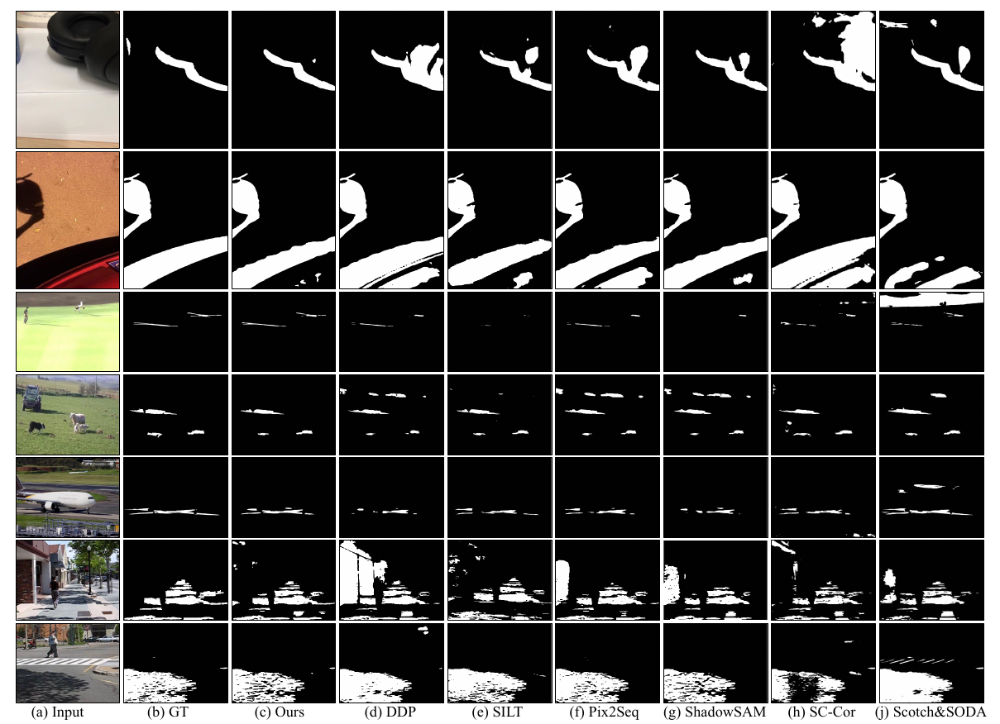

Video Shadow Detection (VSD) aims to detect the shadow masks with frame sequence. Existing works suffer from inefficient temporal learning. Moreover, few works address the VSD problem by considering the characteristic (i.e., boundary) of shadow. Motivated by this, we propose a Timeline and Boundary Guided Diffusion (TBGDiff) network for VSD where we take account of the past-future temporal guidance and boundary information jointly. In detail, we design a Dual Scale Aggregation (DSA) module for better temporal understanding by rethinking the affinity of the long-term and short-term frames for the clipped video. Next, we introduce Shadow Boundary Aware Attention (SBAA) to utilize the edge contexts for capturing the characteristics of shadows. Moreover, we are the first to introduce the Diffusion model for VSD in which we explore a Space-Time Encoded Embedding (STEE) to inject the temporal guidance for Diffusion to conduct shadow detection. Benefiting from these designs, our model can not only capture the temporal information but also the shadow property. Extensive experiments show that the performance of our approach overtakes the state-of-the-art methods, verifying the effectiveness of our components.

@inproceedings{
zhou2024timeline,
title={Timeline and Boundary Guided Diffusion Network for Video Shadow Detection},
author={Haipeng Zhou and Hongqiu Wang and Tian Ye and Zhaohu Xing and Jun Ma and Ping Li and Qiong Wang and Lei Zhu},
booktitle={ACM Multimedia 2024},
year={2024},
}